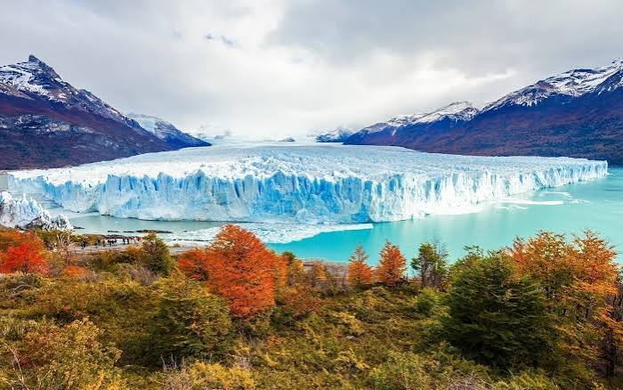
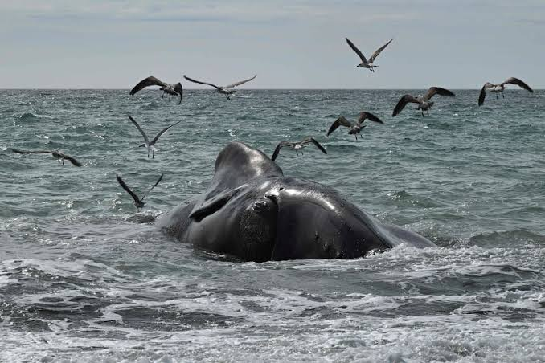

Minitrekking Glaciar
Camina con grampones sobre el hielo del glaciar Perito Moreno, explorando grietas y lagunas azules.
Ver detalles
La excursión incluye una caminata guiada sobre el glaciar. Consultá la edad mínima y los requisitos físicos antes de reservar.

Avistaje de Ballenas
Navega por las aguas del Golfo Nuevo en Puerto Madryn para observar de cerca a la Ballena Franca Austral.
Ver detalles
La navegación sale desde Puerto Madryn. Consultá las fechas y la disponibilidad de salidas antes de reservar.
Navegación Canal Beagle
Zarpa desde el fin del mundo para fotografiar el icónico Faro Les Éclaireurs y colonias de lobos marinos.
Ver detalles
Durante el recorrido se pueden observar el Faro Les Éclaireurs y fauna marina. La salida depende de las condiciones climáticas.
Senderismo El Chaltén
Recorre la capital nacional del trekking hacia la base del imponente Monte Fitz Roy y la Laguna de los Tres.
Ver detalles
El recorrido hacia Laguna de los Tres es exigente y puede llevar varias horas. Revisá el clima y el estado del sendero antes de salir.